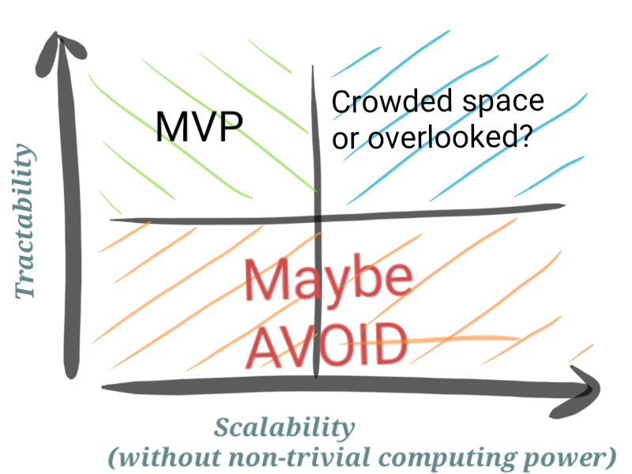

| Types of problems to solve (and avoid) |
2018-12-04 by AmitSome problems are better suited to get started on than others - in terms of how likely you are to succeed. This is especially important if you are short on some resources like time or finances or compute power.
As a rule, it is best to stay clear of what are known as "wicked-problems". These are, loosely speaking, ill-defined problems with a likely infinite solution space.
These problems can be quite enticing from the allure of solving-the-challenge or making-a-difference-in-the-society that they present. But that can be deceptive.
Even in case of well-defined, non-wicked problems, you have a large class of problems to chose from. But purely from the PoV of solvability, ultimately, you want to work on problems which are largely tractable. For such problems, the solutions can be either easily scalable or not so much without using a lot of computing power or automation.
Problem -solution space:
Tractable problem but current solution not scalable without using automation or computers
- Initial solution might be manual but is easily done;
an MVP may be tested by "selling" the "manual solution" and scale up as required by investing in automation - Best place to start
- Don't worry about non-scalability of the solution at this stage. Scalability is always a good problem to have.
- Initial solution might be manual but is easily done;
Tractable and scalable without using automation or computers
- Probably you are looking at a very "trivial" problem for which the market-place is already saturated.
- Not a great space to be in from making-a-difference point of view
Intractable without computers and significant automation
- AVOID jumping straight to these problems as these require significantly higher upfront investment in solution before testing the MVP
e.g: Big-Data anything using ML: Need to have a large dataset to begin working with along with ML models etc
- AVOID jumping straight to these problems as these require significantly higher upfront investment in solution before testing the MVP
 Problem/solution space based on tractability and scalability
- There is no definitive formulation of such wicked problems (e.g solving poverty)
- Wicked problems have no stopping rule or definition-of-done
- Solutions to such problems are not true or false but good or bad
- There are no immediate or final tests of solutions to such problems
- Every solution to a wicked problem is a "one-shot operation"; because there is no opportunity to learn by trial-and-error, every attempt counts significantly
- Ill defined and infinite solution space for such problems
- No-transferability of solutions to such problems - each wicked problem is essentially unique
- Interdependencies between such wicked problems (e.g poverty may be related to education may be related to population may be related to ....)
A good paper to read up on the complexity of planning problems